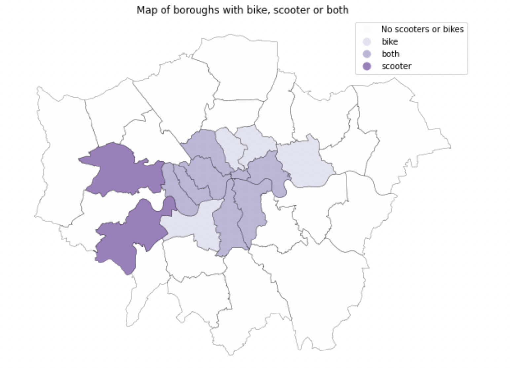
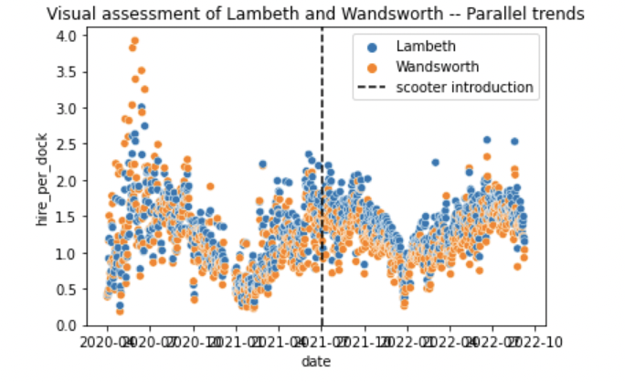
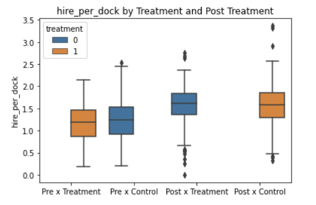

2 Causal relationship of e-scooter on bike hire
2.1 Technical Skills
Python, difference in difference modelling, multi-temporal DiD modelling, balance t-test
2.2 Premise
This study investigates whether the introduction of e-scooters has supplemented or disrupted Santander ridership volume, on borough level. A limited number of London boroughs contain Santander Cycles, e-scooter trials, or both modes of transport. This study thus uses difference in difference (DiD) to measure the statistical impact of the introduction of e-scooter trials by comparing boroughs that contain both Santander Cycles and e-scooter trials to similar boroughs with just Santander Cycle docking stations.
It is extremely costly and near-impossible to conduct a controlled and randomised experiment to explore the causal relationship between introduction of e-scooters and Santander bikes. DiD allows us to establish a counterfactual using a controlled group, such that it acts as the treatment group in the absence of treatment. The key dataset used is from Transport for London’s Santander hire database.
This study also accounts for the behavioural change stemming from the pandemic by incorporating the use of public transport, in the form of bus, underground and overground usage, to act as a proxy for fluctuating Covid-related travel restrictions and preferences.
2.2.1 Balance Test
In deciding the most appropriate boroughs to compare, t-tests and visual assessments are used. Only Camden and Islington and Lambeth and Wandsworth were statistically sound for Difference in Difference modelling.


2.2.2 Difference in Difference Modelling


Neither of DID models returned statistically significant results, causing inconclusive results. Nonetheless, this outcome raises interesting questions over the length of London’s e-scooter trial. The impact of policies, particularly those which encourage behavioural change, often taken years to manifest. However, given London’s short e-scooter trial of around 3 years, only a short time period of data is available for analysis. This brings the question of whether London’s e-scooter trial needs to be extended a few years longer for significant statistical insights to be possible.